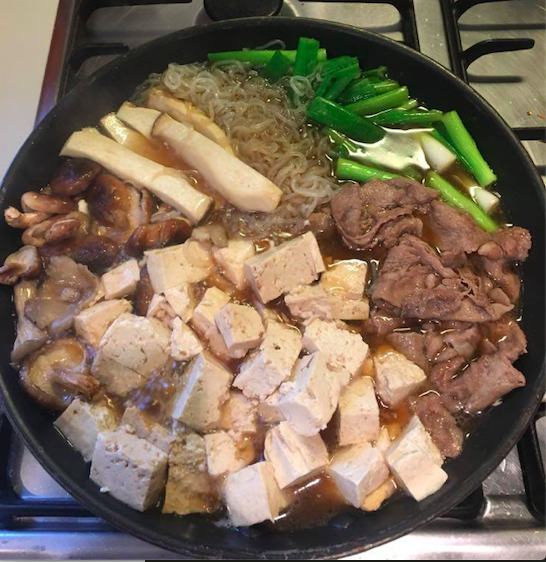
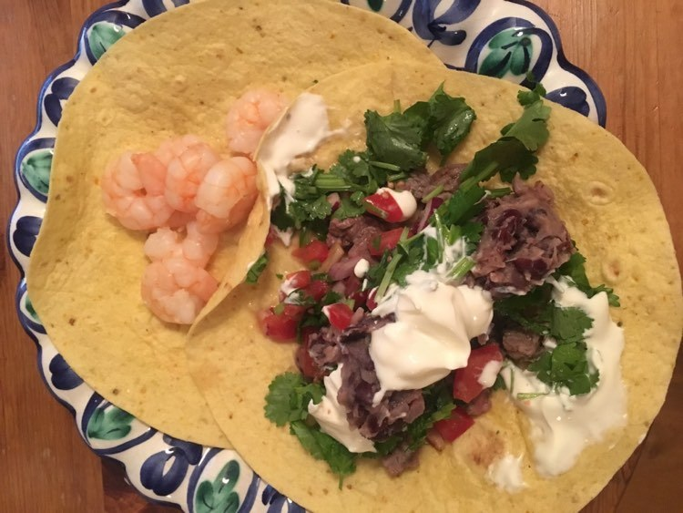
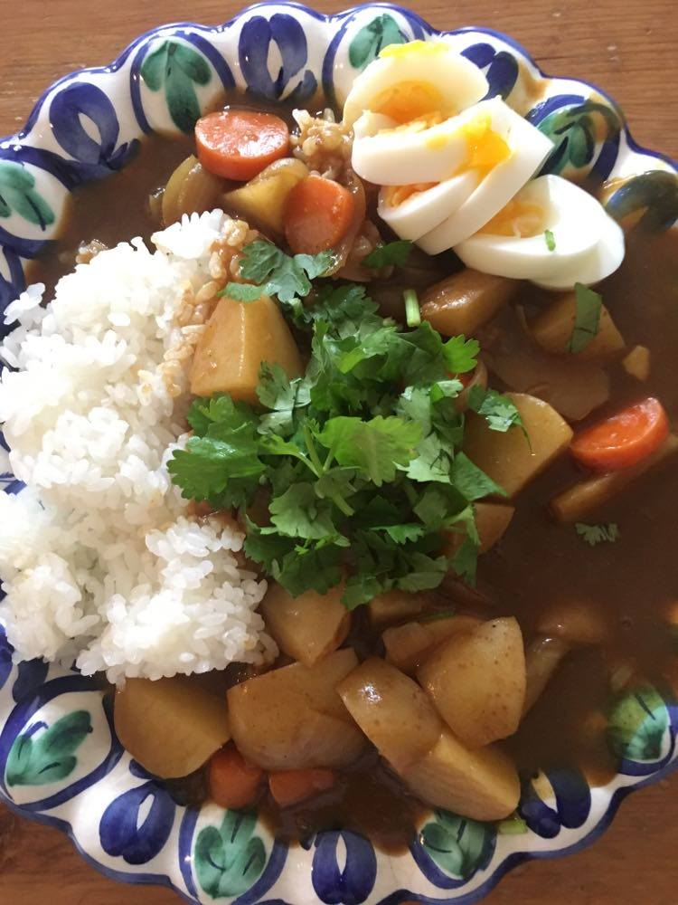

Mariko
I like eating and cooking!
I enjoy taking a walk in the woods and parks in London.
Information
St John's Wood, London
LSE Alumni
Watching Spiritual Channels on YouTube
Skills
HTML
CSS
English & Japanese
Arabic & Spanish
About Me
My name is Mariko.
I am a Japanese from Tokyo currently living in St John's Wood in London.
My favorite places in London are: Highgate Wood, Regent's Park, Hampstead Heath, Paddington Recreation Ground, St John's Wood, Swiss Cottage and Finchely Road area, Highgate area, Hampstead area, Oxford Circus area, Stock Newington area and many more! I like watching spiritual channels on YouTube to improve my vibrations!
My favorite restaurants & takeaways in London are (randomely): The Ivy, Pim's Cuisine (The Old City Arms), Rasa Sayang (Singaporean-Malay in Chinatown), Prix Fixe Brasserie (French in Soho), Pizza Union, Theo's (Pizzeria), Kish Restaurant (Persian in Kilburn), Manghal Restaurant (Turkish in Stoke Newington), Antepliler Restaurant (Turkish in Green Lanes with their shop and cafe dedicated to Baklava right next to it), Som Saa (The best Thai restaurant in London located in Shoreditch), Udaya Restaurant (The best and the award winning Indian/Kerala restaurant in London located in East Ham), Classic Indian Cuisine (Belsize Road), Nando's, Wasabi, Paul's Bakery, Lanka (Japanese-French patisserie in Finchely Road), Papa John's and many more!
My favorite grocery stores in London are: Waitrose, Rice and Wine, Atariya Foods, Natural Natural, Iceland (for frozen king prawns and scallopes particularly), The Whole Foods, The Panzer's (St John's Wood local favorite), Clifton Greens (green groceries in Maida Vale), M&S (for fruits and vegetables) and many more!
My favorite shops in London are: TKMaxx, Caths Kidston, John Lewis, Oasis, H&M, The Gap, The Westfield (Shepherd's Bush), Matalan, Lovisa (Australian casual jewelry shoop), Claire's (American casual jewelry shop), The Boots, The Holland & Barret and so many charity shops and many more!
Interests
- Cooking   
- Walking in the Wood
- YouTube Akiko Spiritual

Namiki san
Mocchi
Starseed Channel
Mademoiselle Ai